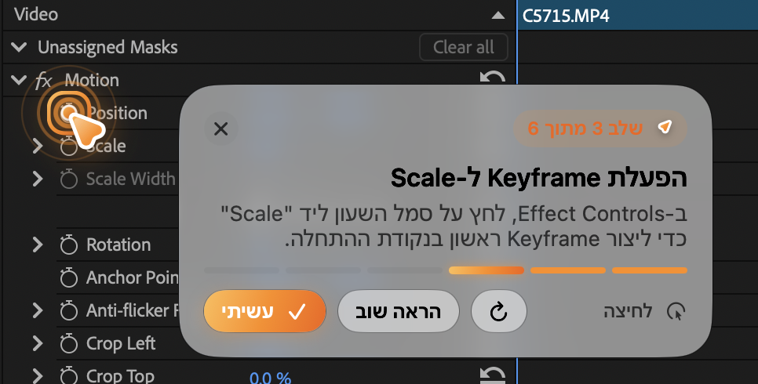

Free
₪0$0לחודש/month
לטעום ולראות שזה עובדTry it and see it work
- 10 שאלות בחודש (עד 3 ביום)10 questions a month (up to 3 a day)
- אותו מודל Claude כמו במסלולים בתשלוםThe same Claude model as paid plans
- בלי כרטיס אשראיNo credit card
שואלים איך עושים משהו במק, וסמן כתום עף בדיוק לכפתור הנכון ומלווה אותך צעד אחרי צעד. Ask how to do anything on your Mac. An orange pointer flies to the exact button and walks you through it.

שואלים בעברית, והבועות מוצגות מימין לשמאל. עובד בפרימייר, בפיגמה, בהגדרות המק ובכל אפליקציה אחרת. Ask in English, Hebrew or anything else. It works in Premiere, Figma, System Settings and every other app.
לוחצים ⌥ Space, שואלים, והסמן מתחיל לזוז תוך כשתי שניות.Press ⌥ Space, ask, and the pointer starts moving in about two seconds.
כשהכפתור קטנטן, Pointy עושה זום לבדיקה שנייה וננעל עליו.When a control is tiny, Pointy zooms in for a second look and locks on.
לוחצים איפה שהוא מראה, והוא עובר לצעד הבא לבד.Click where it points and it moves to the next step by itself.
מדברים במקום להקליד, ואפשר גם לשמוע כל צעד בקול.Ask with your voice, and hear each step read aloud if you like.
כשהצעד הוא קיצור, הוא מציג את המקשים ומזהה כשלחצת.When a step is a shortcut, it shows the keys and notices when you press them.
בלי מפתח API ובלי הגדרות: נרשמים ושואלים. מתחילים בחינם, ומשדרגים רק כשרוצים יותר.No API key, no setup: sign in and ask. Start free and upgrade only when you want more.
המסלולים פתוחים. מתחילים בחינם, ואפשר לבטל מנוי בכל עת מדף החשבון.Plans are open. Start free, and cancel a subscription any time from your account page.
₪0$0לחודש/month
לטעום ולראות שזה עובדTry it and see it work
₪49$13לחודש/month
לשימוש יומיומיFor everyday use
₪149$40לחודש/month
למי שעובד עם זה כל היוםFor working with it all day
₪129.90$35פעם אחת, לכל החייםonce, for life
למי שיש מפתח API משלו ב־AnthropicFor people with their own Anthropic API key
המחירים בשקלים וכוללים מע"מ. המנוי מתחדש אוטומטית כל חודש עד שמבטלים. אפשר לבטל בכל רגע מדף החשבון, בלי התחייבות, והגישה נמשכת עד סוף החודש ששולם. שאלות שלא נוצלו לא עוברות לחודש הבא. גרסת המפתחים היא תשלום אחד, בלי חידוש. פרטים בתנאי השימוש.Prices include VAT where it applies. Subscriptions renew automatically every month until you cancel. Cancel any time from your account page with no commitment; access lasts until the end of the paid month. Unused questions don't roll over. The Developer license is a single payment that never renews. Details in the Terms.
פותחים את קובץ ה־DMG וגוררים את Pointy לתיקיית Applications.Open the DMG and drag Pointy into your Applications folder.
בפעם הראשונה: הגדרות המערכת ← פרטיות ואבטחה ← "פתח בכל זאת". ואז מאשרים הקלטת מסך.The first time: System Settings → Privacy & Security → "Open Anyway". Then allow Screen Recording.
מתחברים עם החשבון שלכם, לוחצים ⌥ Space בכל מקום ושואלים. 10 שאלות בחודש בחינם.Sign in with your account, press ⌥ Space anywhere and ask. 10 free questions a month.
מתחילים בחינם: 10 שאלות בחודש, בלי כרטיס אשראי ובלי מפתח API. מי שרוצה יותר עובר ל־Pro (₪49 לחודש) או ל־Max (₪149 לחודש). למי שיש מפתח API משלו יש גרסת מפתחים בתשלום חד־פעמי של ₪129.90, ואז Anthropic מחייבת אותו ישירות לפי שימוש. מחיריםStart free: 10 questions a month, no credit card and no API key. Want more? Pro is ₪49/month and Max ₪149/month. If you have your own API key, the Developer license is a one-time ₪129.90, and Anthropic bills you directly for usage. Pricing
Pointy מצלם את המסך רק כשאתם שואלים, ושולח את הצילום ישירות מהמק שלכם ל־Claude של Anthropic עם המפתח שלכם. אנחנו לא מקבלים ולא שומרים צילומי מסך. השאלות האחרונות, ההגדרות ומונה העלויות נשמרים רק על המק (אפשר למחוק בהגדרות), והמפתח נשמר ב־Keychain. מדיניות הפרטיותPointy only captures your screen when you ask, and sends it straight from your Mac to Anthropic's Claude using your own key. We never receive or store screenshots. Your recent questions, settings and cost counter stay on your Mac (you can clear them in Settings), and your key stays in the Keychain. Privacy policy
Pointy עוד לא עבר נוטריזציה של אפל. פותרים את זה פעם אחת דרך "פתח בכל זאת" בהגדרות פרטיות ואבטחה.Pointy isn't notarized by Apple yet. Fix it once with "Open Anyway" in Privacy & Security settings.
כרגע רק במק. גולשים מהטלפון? שלחו לעצמכם את הלינק ופתחו אותו במק.Mac only for now. On your phone? Send yourself the link and open it on your Mac.